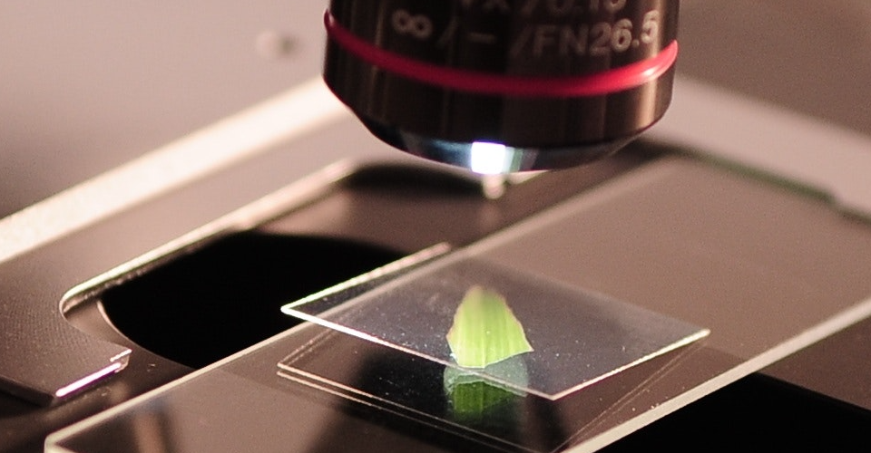

Science! Science is a pretty cool topic that has many interesting things and can have some very fun categories you can research further upon including: Physics, Biology, Chemistry, Computer Science, and a lot more! Personally I really enjoy Chemistry and Physics as well.
I have done Science Bowl, read about sciences and have watched interesting videos as well. Sometimes it can get a little tidious, but overall can be very fun and very useful. The process of learning about how things work, applying them, and talking about these things is very interesting and is very fascinating to me.
I started kind of enjoying science from 5th grade and then started to enjoy it more up until now. Major breakthroughs in science are laws, energy conservation, conservation of mass, and many other discoveries. Besides science, I also enjoy sports, chess, cooking, games, etc... as you can also apply science to many of these things too.
